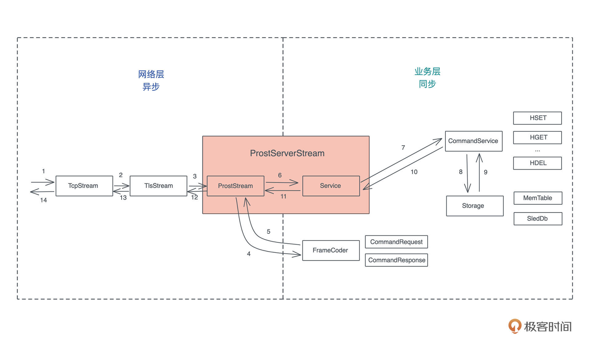

- 00 开篇词 让Rust成为你的下一门主力语言.md
- 01 内存：值放堆上还是放栈上，这是一个问题.md
- 02 串讲：编程开发中，那些你需要掌握的基本概念.md
- 03 初窥门径：从你的第一个Rust程序开始！.md
- 04 get hands dirty：来写个实用的CLI小工具.md
- 05 get hands dirty：做一个图片服务器有多难？.md
- 06 get hands dirty：SQL查询工具怎么一鱼多吃？.md
- 07 所有权：值的生杀大权到底在谁手上？.md
- 08 所有权：值的借用是如何工作的？.md
- 09 所有权：一个值可以有多个所有者么？.md
- 10 生命周期：你创建的值究竟能活多久？.md
- 11 内存管理：从创建到消亡，值都经历了什么？.md
- 12 类型系统：Rust的类型系统有什么特点？.md
- 13 类型系统：如何使用trait来定义接口？.md
- 14 类型系统：有哪些必须掌握的trait？.md
- 15 数据结构：这些浓眉大眼的结构竟然都是智能指针？.md
- 16 数据结构：Vec_T_、&[T]、Box_[T]_ ，你真的了解集合容器么？.md
- 17 数据结构：软件系统核心部件哈希表，内存如何布局？.md
- 18 错误处理：为什么Rust的错误处理与众不同？.md
- 19 闭包：FnOnce、FnMut和Fn，为什么有这么多类型？.md
- 20 4 Steps ：如何更好地阅读Rust源码？.md
- 21 阶段实操（1）：构建一个简单的KV server-基本流程.md
- 22 阶段实操（2）：构建一个简单的KV server-基本流程.md
- 23 类型系统：如何在实战中使用泛型编程？.md
- 24 类型系统：如何在实战中使用trait object？.md
- 25 类型系统：如何围绕trait来设计和架构系统？.md
- 26 阶段实操（3）：构建一个简单的KV server-高级trait技巧.md
- 27 生态系统：有哪些常有的Rust库可以为我所用？.md
- 28 网络开发（上）：如何使用Rust处理网络请求？.md
- 29 网络开发（下）：如何使用Rust处理网络请求？.md
- 30 Unsafe Rust：如何用C++的方式打开Rust？.md
- 31 FFI：Rust如何和你的语言架起沟通桥梁？.md
- 32 实操项目：使用PyO3开发Python3模块.md
- 33 并发处理（上）：从atomics到Channel，Rust都提供了什么工具？.md
- 34 并发处理（下）：从atomics到Channel，Rust都提供了什么工具？.md
- 35 实操项目：如何实现一个基本的MPSC channel？.md
- 36 阶段实操（4）：构建一个简单的KV server-网络处理.md
- 37 阶段实操（5）：构建一个简单的KV server-网络安全.md
- 38 异步处理：Future是什么？它和async_await是什么关系？.md
- 39 异步处理：async_await内部是怎么实现的？.md
- 40 异步处理：如何处理异步IO？.md
- 41 阶段实操（6）：构建一个简单的KV server-异步处理.md
- 42 阶段实操（7）：构建一个简单的KV server-如何做大的重构？.md
- 43 生产环境：真实世界下的一个Rust项目包含哪些要素？.md
- 44 数据处理：应用程序和数据如何打交道？.md
- 45 阶段实操（8）：构建一个简单的KV server-配置_测试_监控_CI_CD.md
- 46 软件架构：如何用Rust架构复杂系统？.md
- 加餐 Rust2021版次问世了！.md
- 加餐 代码即数据：为什么我们需要宏编程能力？.md
- 加餐 宏编程（上）：用最“笨”的方式撰写宏.md
- 加餐 宏编程（下）：用 syn_quote 优雅地构建宏.md
- 加餐 愚昧之巅：你的Rust学习常见问题汇总.md
- 加餐 期中测试：参考实现讲解.md
- 加餐 期中测试：来写一个简单的grep命令行.md
- 加餐 这个专栏你可以怎么学，以及Rust是否值得学？.md
- 大咖助场 开悟之坡（上）：Rust的现状、机遇与挑战.md
- 大咖助场 开悟之坡（下）：Rust的现状、机遇与挑战.md
- 特别策划 学习锦囊（一）：听听课代表们怎么说.md
- 特别策划 学习锦囊（三）：听听课代表们怎么说.md
- 特别策划 学习锦囊（二）：听听课代表们怎么说.md
- 用户故事 绝望之谷：改变从学习开始.md
- 用户故事 语言不仅是工具，还是思维方式.md
- 结束语 永续之原：Rust学习，如何持续精进？.md
41 阶段实操（6）：构建一个简单的KV server-异步处理
你好，我是陈天。
到目前为止，我们已经一起完成了一个相对完善的 KV server。还记得是怎么一步步构建这个服务的么？
基础篇学完，我们搭好了KV server 的基础功能（[21讲]、[22讲]），构造了客户端和服务器间交互的 protobuf，然后设计了 CommandService trait 和 Storage trait，分别处理客户端命令和存储。
在进阶篇掌握了trait的实战使用技巧之后，（[26讲]）我们进一步构造了 Service 数据结构，接收 CommandRequest，根据其类型调用相应的 CommandService 处理，并做合适的事件通知，最后返回 CommandResponse。
但所有这一切都发生在同步的世界：不管数据是怎么获得的，数据已经在那里，我们需要做的就是把一种数据类型转换成另一种数据类型的运算而已。
之后我们涉足网络的世界。（[36讲]）为 KV server 构造了自己的 frame：一个包含长度和是否压缩的信息的 4 字节的头，以及实际的 payload；还设计了一个 FrameCoder 来对 frame 进行封包和拆包，这为接下来构造网络接口打下了坚实的基础。考虑到网络安全，（[37讲]）我们提供了 TLS 的支持。
在构建 ProstStream 的时候，我们开始处理异步：ProstStream 内部的 stream 需要支持 AsyncRead + AsyncWrite，这可以让 ProstStream 适配包括 TcpStream 和 TlsStream 在内的一切实现了 AsyncRead 和 AsyncWrite 的异步网络接口。
至此，我们打通了从远端得到一个命令，历经 TCP、TLS，然后被 FrameCoder 解出来一个 CommandRequest，交由 Service 来处理的过程。把同步世界和异步世界连接起来的，就是 ProstServerStream 这个结构。
这个从收包处理到处理完成后发包的完整流程和系统结构，可以看下图：

今天做点什么？
虽然我们很早就已经撰写了不少异步或者和异步有关的代码。但是最能体现 Rust 异步本质的 poll()、poll_read()、poll_next() 这样的处理函数还没有怎么写过，之前测试异步的 read_frame() 写过一个 DummyStream，算是体验了一下底层的异步处理函数的复杂接口。不过在 DummyStream 里，我们并没有做任何复杂的动作：
struct DummyStream {
buf: BytesMut,
}
impl AsyncRead for DummyStream {
fn poll_read(
self: std::pin::Pin<&mut Self>,
_cx: &mut std::task::Context<'_>,
buf: &mut tokio::io::ReadBuf<'_>,
) -> std::task::Poll<std::io::Result<()>> {
// 看看 ReadBuf 需要多大的数据
let len = buf.capacity();
// split 出这么大的数据
let data = self.get_mut().buf.split_to(len);
// 拷贝给 ReadBuf
buf.put_slice(&data);
// 直接完工
std::task::Poll::Ready(Ok(()))
}
}
上一讲我们学习了异步 IO，这堂课我们就学以致用，对现有的代码做些重构，让核心的 ProstStream 更符合 Rust 的异步 IO 接口逻辑。具体要做点什么呢？
看之前写的 ProstServerStream 的 process() 函数，比较一下它和 async_prost 库的 AsyncProst 的调用逻辑：
// process() 函数的内在逻辑
while let Ok(cmd) = self.recv().await {
info!("Got a new command: {:?}", cmd);
let res = self.service.execute(cmd);
self.send(res).await?;
}
// async_prost 库的 AsyncProst 的调用逻辑
while let Some(Ok(cmd)) = stream.next().await {
info!("Got a new command: {:?}", cmd);
let res = svc.execute(cmd);
stream.send(res).await.unwrap();
}
可以看到由于 AsyncProst 实现了 Stream 和 Sink，能更加自然地调用 StreamExt trait 的 next() 方法和 SinkExt trait 的 send() 方法，来处理数据的收发，而 ProstServerStream 则自己额外实现了函数 recv() 和 send()。
虽然从代码对比的角度，这两段代码几乎一样，但未来的可扩展性，和整个异步生态的融洽性上，AsyncProst 还是更胜一筹。
所以今天我们就构造一个 ProstStream 结构，让它实现 Stream 和 Sink 这两个 trait，然后让 ProstServerStream 和 ProstClientStream 使用它。
创建 ProstStream
在开始重构之前，先来简单复习一下 Stream trait 和 Sink trait：
// 可以类比 Iterator
pub trait Stream {
// 从 Stream 中读取到的数据类型
type Item;
// 从 stream 里读取下一个数据
fn poll_next(
self: Pin<&mut Self>, cx: &mut Context<'_>
) -> Poll<Option<Self::Item>>;
}
//
pub trait Sink<Item> {
type Error;
fn poll_ready(
self: Pin<&mut Self>,
cx: &mut Context<'_>
) -> Poll<Result<(), Self::Error>>;
fn start_send(self: Pin<&mut Self>, item: Item) -> Result<(), Self::Error>;
fn poll_flush(
self: Pin<&mut Self>,
cx: &mut Context<'_>
) -> Poll<Result<(), Self::Error>>;
fn poll_close(
self: Pin<&mut Self>,
cx: &mut Context<'_>
) -> Poll<Result<(), Self::Error>>;
}
那么 ProstStream 具体需要包含什么类型呢？
因为它的主要职责是从底下的 stream 中读取或者发送数据，所以一个支持 AsyncRead 和 AsyncWrite 的泛型参数 S 是必然需要的。
另外 Stream trait 和 Sink 都各需要一个 Item 类型，对于我们的系统来说，Item 是 CommandRequest 或者 CommandResponse，但为了灵活性，我们可以用 In 和 Out 这两个泛型参数来表示。
当然，在处理 Stream 和 Sink 时还需要 read buffer 和 write buffer。
综上所述，我们的 ProstStream 结构看上去是这样子的：
pub struct ProstStream<S, In, Out> {
// innner stream
stream: S,
// 写缓存
wbuf: BytesMut,
// 读缓存
rbuf: BytesMut,
}
然而，Rust 不允许数据结构有超出需要的泛型参数。怎么办？别急，可以用 PhantomData，之前讲过它是一个零字节大小的占位符，可以让我们的数据结构携带未使用的泛型参数。
好，现在有足够的思路了，我们创建 src/network/stream.rs，添加如下代码（记得在 src/network/mod.rs 添加对 stream.rs 的引用）：
use bytes::BytesMut;
use futures::{Sink, Stream};
use std::{
marker::PhantomData,
pin::Pin,
task::{Context, Poll},
};
use tokio::io::{AsyncRead, AsyncWrite};
use crate::{FrameCoder, KvError};
/// 处理 KV server prost frame 的 stream
pub struct ProstStream<S, In, Out> where {
// innner stream
stream: S,
// 写缓存
wbuf: BytesMut,
// 读缓存
rbuf: BytesMut,
// 类型占位符
_in: PhantomData<In>,
_out: PhantomData<Out>,
}
impl<S, In, Out> Stream for ProstStream<S, In, Out>
where
S: AsyncRead + AsyncWrite + Unpin + Send,
In: Unpin + Send + FrameCoder,
Out: Unpin + Send,
{
/// 当调用 next() 时，得到 Result<In, KvError>
type Item = Result<In, KvError>;
fn poll_next(self: Pin<&mut Self>, cx: &mut Context<'_>) -> Poll<Option<Self::Item>> {
todo!()
}
}
/// 当调用 send() 时，会把 Out 发出去
impl<S, In, Out> Sink<Out> for ProstStream<S, In, Out>
where
S: AsyncRead + AsyncWrite + Unpin,
In: Unpin + Send,
Out: Unpin + Send + FrameCoder,
{
/// 如果发送出错，会返回 KvError
type Error = KvError;
fn poll_ready(self: Pin<&mut Self>, cx: &mut Context<'_>) -> Poll<Result<(), Self::Error>> {
todo!()
}
fn start_send(self: Pin<&mut Self>, item: Out) -> Result<(), Self::Error> {
todo!()
}
fn poll_flush(self: Pin<&mut Self>, cx: &mut Context<'_>) -> Poll<Result<(), Self::Error>> {
todo!()
}
fn poll_close(self: Pin<&mut Self>, cx: &mut Context<'_>) -> Poll<Result<(), Self::Error>> {
todo!()
}
}
这段代码包含了为 ProstStream 实现 Stream 和 Sink 的骨架代码。接下来我们就一个个处理。注意对于 In 和 Out 参数，还为其约束了 FrameCoder，这样，在实现里我们可以使用 decode_frame() 和 encode_frame() 来获取一个 Item 或者 encode 一个 Item。
Stream 的实现
先来实现 Stream 的 poll_next() 方法。
poll_next() 可以直接调用我们之前写好的 read_frame()，然后再用 decode_frame() 来解包：
fn poll_next(mut self: Pin<&mut Self>, cx: &mut Context<'_>) -> Poll<Option<Self::Item>> {
// 上一次调用结束后 rbuf 应该为空
assert!(self.rbuf.len() == 0);
// 从 rbuf 中分离出 rest（摆脱对 self 的引用）
let mut rest = self.rbuf.split_off(0);
// 使用 read_frame 来获取数据
let fut = read_frame(&mut self.stream, &mut rest);
ready!(Box::pin(fut).poll_unpin(cx))?;
// 拿到一个 frame 的数据，把 buffer 合并回去
self.rbuf.unsplit(rest);
// 调用 decode_frame 获取解包后的数据
Poll::Ready(Some(In::decode_frame(&mut self.rbuf)))
}
这个不难理解，但中间这段需要稍微解释一下：
// 使用 read_frame 来获取数据
let fut = read_frame(&mut self.stream, &mut rest);
ready!(Box::pin(fut).poll_unpin(cx))?;
因为 poll_xxx() 方法已经是 async/await 的底层 API 实现，所以我们在 poll_xxx() 方法中，是不能直接使用异步函数的，需要把它看作一个 future，然后调用 future 的 poll 函数。因为 future 是一个 trait，所以需要 Box 将其处理成一个在堆上的 trait object，这样就可以调用 FutureExt 的 poll_unpin() 方法了。Box::pin 会生成 Pin<Box>。
至于 ready! 宏，它会在 Pending 时直接 return Pending，而在 Ready 时，返回 Ready 的值：
macro_rules! ready {
($e:expr $(,)?) => {
match $e {
$crate::task::Poll::Ready(t) => t,
$crate::task::Poll::Pending => return $crate::task::Poll::Pending,
}
};
}
Stream 我们就实现好了，是不是也没有那么复杂？
Sink 的实现
再写Sink，看上去要实现好几个方法，其实也不算复杂。四个方法 poll_ready、start_send()、poll_flush 和 poll_close 我们再回顾一下。
poll_ready() 是做背压的，你可以根据负载来决定要不要返回 Poll::Ready。对于我们的网络层来说，可以先不关心背压，依靠操作系统的 TCP 协议栈提供背压处理即可，所以这里直接返回 Poll::Ready(Ok(()))，也就是说，上层想写数据，可以随时写。
fn poll_ready(self: Pin<&mut Self>, _cx: &mut Context<'_>) -> Poll<Result<(), Self::Error>> {
Poll::Ready(Ok(()))
}
当 poll_ready() 返回 Ready 后，Sink 就走到 start_send()。我们在 start_send() 里就把必要的数据准备好。这里把 item 封包成字节流，存入 wbuf 中：
fn start_send(self: Pin<&mut Self>, item: Out) -> Result<(), Self::Error> {
let this = self.get_mut();
item.encode_frame(&mut this.wbuf)?;
Ok(())
}
然后在 poll_flush() 中，我们开始写数据。这里需要记录当前写到哪里，所以需要在 ProstStream 里加一个字段 written，记录写入了多少字节：
/// 处理 KV server prost frame 的 stream
pub struct ProstStream<S, In, Out> {
// innner stream
stream: S,
// 写缓存
wbuf: BytesMut,
// 写入了多少字节
written: usize,
// 读缓存
rbuf: BytesMut,
// 类型占位符
_in: PhantomData<In>,
_out: PhantomData<Out>,
}
有了这个 written 字段， 就可以循环写入：
fn poll_flush(self: Pin<&mut Self>, cx: &mut Context<'_>) -> Poll<Result<(), Self::Error>> {
let this = self.get_mut();
// 循环写入 stream 中
while this.written != this.wbuf.len() {
let n = ready!(Pin::new(&mut this.stream).poll_write(cx, &this.wbuf[this.written..]))?;
this.written += n;
}
// 清除 wbuf
this.wbuf.clear();
this.written = 0;
// 调用 stream 的 poll_flush 确保写入
ready!(Pin::new(&mut this.stream).poll_flush(cx)?);
Poll::Ready(Ok(()))
}
最后是 poll_close()，我们只需要调用 stream 的 flush 和 shutdown 方法，确保数据写完并且 stream 关闭：
fn poll_close(mut self: Pin<&mut Self>, cx: &mut Context<'_>) -> Poll<Result<(), Self::Error>> {
// 调用 stream 的 poll_flush 确保写入
ready!(self.as_mut().poll_flush(cx))?;
// 调用 stream 的 poll_shutdown 确保 stream 关闭
ready!(Pin::new(&mut self.stream).poll_shutdown(cx))?;
Poll::Ready(Ok(()))
}
ProstStream 的创建
我们的 ProstStream 目前已经实现了 Stream 和 Sink，为了方便使用，再构建一些辅助方法，比如 new()：
impl<S, In, Out> ProstStream<S, In, Out>
where
S: AsyncRead + AsyncWrite + Send + Unpin,
{
/// 创建一个 ProstStream
pub fn new(stream: S) -> Self {
Self {
stream,
written: 0,
wbuf: BytesMut::new(),
rbuf: BytesMut::new(),
_in: PhantomData::default(),
_out: PhantomData::default(),
}
}
}
// 一般来说，如果我们的 Stream 是 Unpin，最好实现一下
impl<S, Req, Res> Unpin for ProstStream<S, Req, Res> where S: Unpin {}
此外，我们还为其实现 Unpin trait，这会给别人在使用你的代码时带来很多方便。一般来说，为异步操作而创建的数据结构，如果使用了泛型参数，那么只要内部没有自引用数据，就应该实现 Unpin。
测试！
又到了重要的测试环节。我们需要写点测试来确保 ProstStream 能正常工作。因为之前在 src/network/frame.rs 中写了个 DummyStream，实现了 AsyncRead，我们只需要扩展它，让它再实现 AsyncWrite。
为了让它可以被复用，我们将其从 frame.rs 中移出来，放在 src/network/mod.rs 中，并修改成下面的样子（记得在 frame.rs 的测试里 use 新的 DummyStream）：
#[cfg(test)]
pub mod utils {
use bytes::{BufMut, BytesMut};
use std::task::Poll;
use tokio::io::{AsyncRead, AsyncWrite};
pub struct DummyStream {
pub buf: BytesMut,
}
impl AsyncRead for DummyStream {
fn poll_read(
self: std::pin::Pin<&mut Self>,
_cx: &mut std::task::Context<'_>,
buf: &mut tokio::io::ReadBuf<'_>,
) -> Poll<std::io::Result<()>> {
let len = buf.capacity();
let data = self.get_mut().buf.split_to(len);
buf.put_slice(&data);
Poll::Ready(Ok(()))
}
}
impl AsyncWrite for DummyStream {
fn poll_write(
self: std::pin::Pin<&mut Self>,
_cx: &mut std::task::Context<'_>,
buf: &[u8],
) -> Poll<Result<usize, std::io::Error>> {
self.get_mut().buf.put_slice(buf);
Poll::Ready(Ok(buf.len()))
}
fn poll_flush(
self: std::pin::Pin<&mut Self>,
_cx: &mut std::task::Context<'_>,
) -> Poll<Result<(), std::io::Error>> {
Poll::Ready(Ok(()))
}
fn poll_shutdown(
self: std::pin::Pin<&mut Self>,
_cx: &mut std::task::Context<'_>,
) -> Poll<Result<(), std::io::Error>> {
Poll::Ready(Ok(()))
}
}
}
好，这样我们就可以在 src/network/stream.rs 下写个测试了：
#[cfg(test)]
mod tests {
use super::*;
use crate::{utils::DummyStream, CommandRequest};
use anyhow::Result;
use futures::prelude::*;
#[tokio::test]
async fn prost_stream_should_work() -> Result<()> {
let buf = BytesMut::new();
let stream = DummyStream { buf };
let mut stream = ProstStream::<_, CommandRequest, CommandRequest>::new(stream);
let cmd = CommandRequest::new_hdel("t1", "k1");
stream.send(cmd.clone()).await?;
if let Some(Ok(s)) = stream.next().await {
assert_eq!(s, cmd);
} else {
assert!(false);
}
Ok(())
}
}
运行 cargo test ，一切测试通过！（如果你编译错误，可能缺少 use 的问题，可以自行修改，或者参考 GitHub 上的完整代码）。
使用 ProstStream
接下来，我们可以让 ProstServerStream 和 ProstClientStream 使用新定义的 ProstStream 了，你可以参考下面的对比，看看二者的区别：
// 旧的接口
// pub struct ProstServerStream<S> {
// inner: S,
// service: Service,
// }
pub struct ProstServerStream<S> {
inner: ProstStream<S, CommandRequest, CommandResponse>,
service: Service,
}
// 旧的接口
// pub struct ProstClientStream<S> {
// inner: S,
// }
pub struct ProstClientStream<S> {
inner: ProstStream<S, CommandResponse, CommandRequest>,
}
然后删除 send()/recv() 函数，并修改 process()/execute() 函数使其使用 next() 方法和 send() 方法。主要的改动如下：
/// 处理服务器端的某个 accept 下来的 socket 的读写
pub struct ProstServerStream<S> {
inner: ProstStream<S, CommandRequest, CommandResponse>,
service: Service,
}
/// 处理客户端 socket 的读写
pub struct ProstClientStream<S> {
inner: ProstStream<S, CommandResponse, CommandRequest>,
}
impl<S> ProstServerStream<S>
where
S: AsyncRead + AsyncWrite + Unpin + Send,
{
pub fn new(stream: S, service: Service) -> Self {
Self {
inner: ProstStream::new(stream),
service,
}
}
pub async fn process(mut self) -> Result<(), KvError> {
let stream = &mut self.inner;
while let Some(Ok(cmd)) = stream.next().await {
info!("Got a new command: {:?}", cmd);
let res = self.service.execute(cmd);
stream.send(res).await.unwrap();
}
Ok(())
}
}
impl<S> ProstClientStream<S>
where
S: AsyncRead + AsyncWrite + Unpin + Send,
{
pub fn new(stream: S) -> Self {
Self {
inner: ProstStream::new(stream),
}
}
pub async fn execute(&mut self, cmd: CommandRequest) -> Result<CommandResponse, KvError> {
let stream = &mut self.inner;
stream.send(cmd).await?;
match stream.next().await {
Some(v) => v,
None => Err(KvError::Internal("Didn't get any response".into())),
}
}
}
再次运行 cargo test ，所有的测试应该都能通过。同样如果有编译错误，可能是缺少了引用。
我们也可以打开一个命令行窗口，运行：RUST_LOG=info cargo run --bin kvs --quiet。然后在另一个命令行窗口，运行：RUST_LOG=info cargo run --bin kvc --quiet。此时，服务器和客户端都收到了彼此的请求和响应，并且处理正常！
我们重构了 ProstServerStream 和 ProstClientStream 的代码，使其内部使用更符合 futures 库里 Stream/Sink trait 的用法，整体代码改动不小，但是内部实现的变更并不影响系统的其它部分！这简直太棒了！
小结
在实际开发中，进行重构来改善既有代码的质量是必不可少的。之前在开发 KV server 的过程中，我们在不断地进行一些小的重构。
今天我们做了个稍微大一些的重构，为已有的代码提供更加符合异步 IO 接口的功能。从对外使用的角度来说，它并没有提供或者满足任何额外的需求，但是从代码结构和质量的角度，它使得我们的 ProstStream 可以更方便和更直观地被其它接口调用，也更容易跟整个 Rust 的现有生态结合起来。
你可能会好奇，为什么可以这么自然地进行代码重构？这是因为我们有足够的单元测试覆盖来打底。
就像生物的进化一样，好的代码是在良性的重构中不断演进出来的，而良性的重构，是在优秀的单元测试的监管下，使代码朝着正确方向迈出的步伐。在这里，单元测试扮演着生物进化中自然环境的角色，把重构过程中的错误一一扼杀。
思考题
- 为什么在创建 ProstStream 时，要在数据结构中放 wbuf/rbuf 和 written 字段？为什么不能用局部变量？
- 仔细阅读 Stream 和 Sink 的文档。尝试写代码构造实现 Stream 和 Sink 的简单数据结构。
欢迎在留言区分享你的思考和学习收获，感谢你的收听，你已经完成了Rust学习的第41次打卡啦，我们下节课见。
© 2019 - 2023 Liangliang Lee. Powered by Vert.x and hexo-theme-book.